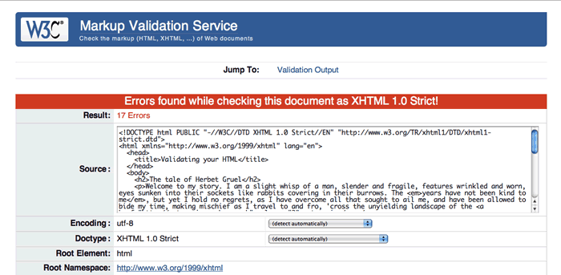
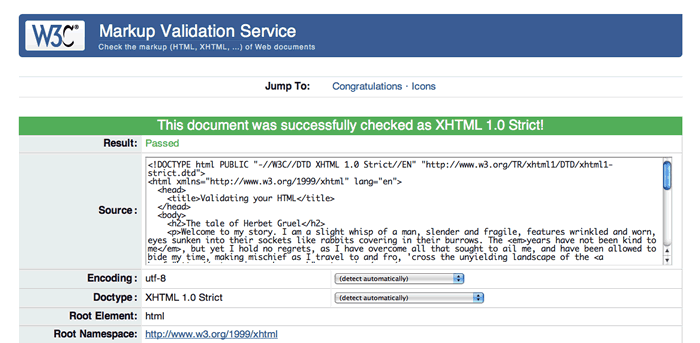

24. A HTML validálása
- Előző leírás—Több lap létrehozása navigációs menüvel
- Következő leírás—A hozzáférhetőség alapjai
- Tartalomjegyzék
Bevezető
Nos, már írtál néhány HTML oldalt és a megjelenítésük is jónak tűnik neked, de van egy pár dolog, ami nincsen egészen rendben velük. Mi a legjobb módja annak, hogy kiderítsük, mi nem stimmel, és biztosak legyünk abban, hogy ezek az oldalak (és azok, amelyeket majd a jövőben fogsz írni) helyesen jelennek meg a böngészőkben, hibák nélkül?
A válasz a validálás! Számos eszköz létezik erre a W3C-nél és más helyeken is, amelyek lehetővé teszik számodra a kód validálását a szájtodon. A három leggyakoribb validátor, amiket használni fogsz:
- The W3C MarkUp Validator: Megnézi az (X)HTML doctype-ot, amit ahhoz a dokumentumhoz használsz, amit ellenőriztetsz, majd végigmegy a teljes dokumentumon kijelölve azokat a részeket, ahol a HTML kódod nem követi helyesen a doctype-ot (vagyis ahol hibák vannak a HTML-ben).
- The W3C Link Checker:
Átnézi az ellenőrzésre adott dokumentumot és leteszteli az összes hivatkozást a dokumentumon belül, hogy biztosan nem tört linkek-e (vagyis, hogy a
hrefértékek nem mutatnak-e olyan forrásokra, amik nem léteznek). - The W3C CSS Validator: Ahogy azt már valószínűleg kitaláltad, ez a CSS (vagy HTML/CSS) dokumentumot vizsgálja át és ellenőrzi, hogy a CSS megfelelően követi-e a specifikációkat.
Ebben a leírásban most ezek közül az elsőt fogom ismertetni, megmutatva hogyan használd, és hogyan értelmezz olyan tipikus eredményeket, amiket a validátor visszaad. A link ellenőrző meglehetősen egyértelmű és a CSS validátornak is eléggé magától értetődőnek kell lennie, miután elolvastad ezt a leírást és azokat a CSS cikkeket, amelyek később kerülnek sorra a kurzus folyamán.
A leírás felépítése a következő:
- Hibák
- Mi az a validálás?
- Miért validáltass?
- A különböző böngészők eltérően jelenítik meg az invalid HTML kódokat.
- Hogyan validáltasd az oldalaidat
- Összefoglaló
- További eszközök, amiket érdemes megnézni
- Tesztkérdések
Hibák
A számítógép-programozás során nagyjából két probléma fordul elő a kódokkal:
- szintaktikai hibák—mikor egy elírás miatt a kódban a számítógép képtelen helyesen végrehajtani, vagy lefordítani a programot.
- programozási (vagy logikai) hibák—mikor a kód nem tükrözi tökéletesen a program eredeti szándékát.
A legtöbb programozási nyelv esetében az első hibát nagyon könnyű kiszúrni—a programod egyszerűen nem fut le, vagy nem lehet lefordítani, amíg a hiba nincs kijavítva. Ez sokkal könnyebben megtalálhatóvá és javítható teszi az ilyen hibákat azokban a fejvakargatós “Miért nem csinálja azt, amit akarok?” percekben.
A HTML nem egy programozási nyelv. Egy weboldal szintaktikai hibái miatt a böngészők általában nem utasítják el az oldal megnyitását (habár az XHTML sokkal szigorúbb a HTML-nél—legalábbis mikor application/xhtml+xml vagy text/xml adatként van kezelve, ahogyan kellene—és néhány doctype nem engedélyezi bizonyos HTML elemek használatát.) Ez az egyik legfőbb oka a web gyors elfogadásának és elterjedésének.
Az első webböngésző, a WorldWideWeb (melyet Tim Berners-Lee írt meg) szintén egy szerkesztő volt, ami lehetővé tette az embereknek weboldalak létrehozását anélkül, hogy először meg kellett volna tanulniuk a HTML-t. Ez a szerkesztő érvénytelen (invalid) HTML-t csinált. Ezeket ki lehetett javítani, de ez lefektetett egy fontos irányelvet, ami az összes böngészőre a mai napig érvényes—azt, hogy lehetővé tenni a tartalmak elérését az emberek számára sokkal fontosabb, mint a hibák miatt panaszkodni azoknak, akik úgysem fogják megérteni, vagy nincsenek abban a helyzetben, hogy kijavíthassák őket.
Mi az a validálás?
Habár a böngészők elfogadják a rossz (erre az invalid kifejezést használjuk) weboldalakat és a tőlük telhető legjobb módon megpróbálják a kódot renderelni a készítő szándékát találgatva, még mindig lehetséges ellenőrizni, hogy a HTML helyesen lett-e megírva és valójában jó ötlet ezt megtenni, amint azt a továbbiakban látni fogod. Ezt hívjuk a HTML “validálásának”.
A validátor program összehasonlítja a HTML kódot a weboldalon a doctype-hoz tartozó szabályokkal és megmondja neked, hogy sérültek-e ezek a szabályok, illetve hol.
Miért validáltass?
Van egy általános hozzáállás néhány webfejlesztő körében miszerint, ha egy weboldal jól néz ki, nem számít, ha nincs validálva. Úgy tekintik a validálást, mint egy ideális célt és nem úgy, mint egy fekete-fehér szabályt.
Akad némi ésszerűség ebben a hozáállásban. A HTML specifikáció nem tökéletes, és eléggé elavult. Néhány dolog aminek a helyessége nem egyértelmű (mint pl. egy rendezett lista kezdése 1-től eltérő számmal) az a HTML-ben invalid. Habár, ahogy a mondás tartja:
Tanuld meg a szabályokat, hogy tudd, hogyan szegd meg őket helyesen.
Van két mindent felülíró oka annak, hogy validáltasd a HTML kódodat, miután megírtad.
- Nem vagy mindig tökéletes és a kódod sem—mindenki követ el hibát, és a weboldalaid jobb minőségűek lesznek (vagyis stabilabban fognak működni) ha kigyomlálod az összes hibát.
- A böngészők változnak. A jövőben valószínűleg kevésbé lesznek megengedőek, ha invalid kódokat kell értelmezniük, nem pedig elnézőbbek.
A validálás egy jó eszköz arra, hogy előre figyelmeztessen, ha olyan hibák kerülnek a kódba, amelyek aztán érdekes, nehezen meghatározható módon képesek alakot ölteni. Ha a böngésző találkozik egy invalid HTML kóddal, akkor el kell kezdenie találgatni, mit is akartál csinálni—és a különböző böngészők más válaszokkal rukkolnak elő.
A különböző böngészők eltérően jelenítik meg az invalid HTML kódokat.
A valid HTML az egyetlen szerződés, amit a böngésző gyártókkal kötsz. A HTML specifikáció megmondja, hogyan kell megírnod és nekik hogyan kell a dokumentumodat lefordítaniuk. Az utóbbi időkben a böngészők szabványokkal szembeni elfogadása eljutott arra a pontra, hogy amíg valid kódot írsz, az összes jelentősebb böngészőnek egyformán kellene azt megjelenítenie. A HTML esetében többé-kevésbé ez a helyzet, míg más szabványoknál van néhány eltérés itt-ott a támogatottságban.
De mi van, ha invalid kódot küldesz egy böngészőnek? Mi történik akkor? A válasz az, hogy a böngésző hibakezelője akcióba lendül, hogy kitalálja, mit is tegyen a kóddal. Alapesetben azt mondja “ok, ez a kód nem validált, szóval akkor hogyan is jelenítsük meg ezt az oldalt a végső felhasználónak? Töltsük ki a hézagokat mondjuk így!”
Ez nagyszerűen hangzik, nem? Ha hagysz néhány hibát az oldaladon, a böngésző kitölti neked a réseket? Nem egészen, mivel minden egyes böngésző másképpen gondolkodik. Például:
<p><strong>Ennek a szövegnek félkövérnek kellene lennie.</p> <p>Ennek a szövegnek tényleg félkövérnek kellene lennie? Hogyan néz ki a HTML kód renderelés után?</p> <p><a href="#"></strong>Ennek a szövegnek hivatkozásnak kellene lennie.</p> <p>Ennek a szövegnek tényleg hivatkozásnak kellene lennie? Hogyan néz ki a HTML kód renderelés után?</p>
A hiba az, hogy a strong elem rosszul van beágyazva többszörös blokk szintű elemeken keresztül és, hogy a kapocs elem nincs lezárva. Mikor megpróbálod rendereltetni ezt különböző böngészőkkel, azok nagyon eltérő módon fordítják le:
- Az Opera a kiemelés után következő elemeket a kiemelés gyerekévé teszi.
- A Firefox plusz kiemelő elemeket szúr be a bekezdések közé, amik nem voltak megadva a kódban.
- Az Internet Explorer az “Ennek a szövegnek hivatkozásnak kellene lennie” szöveget kívül helyezi a kapocs tag-en, ami létrehozza a linket.
Ennek a példának az eredeti változata megtalálható Hallvord Steen cikkében: “Same DOM errors, different browser interpretations”—olvasd el a HTML hibák alaposabb megismerése végett és néhány információért a hibajavító eszközökről.
Egyik böngésző viselkedése sem helytelen; mind megpróbálja kitölteni a hibás kódod réseit. A lényeg tehát, hogy kerüld az invalid kódolást az oldaladon, amennyire csak lehetséges!
Quirks mód
Még egy dolog, amiről tudnod kell, az a Quirks mód. Ez az a mód, amelybe a böngészők átállnak, ha egy olyan oldallal találkoznak, amelynek helytelen a doctype-ja, vagy egyáltalán nincs is. Ebben a módban a böngésző találgatja milyen szabályok szerint kellene validálni a kódot és megint csak legjobb tudása szerint tölti ki a hiányzó részeket. Ez a mód valójában azért létezik, hogy a régebbi oldalak is megjeleníthetőek legyenek, és sohasem kellene alkalmazni új oldalak megírásakor.
Hogyan validáltasd az oldalaidat
Most, hogy már felderítettük a HTML validálás mögött meghúzódó összes elméletet, a könnyebbik részről fogok beszélni—az aktuális validálásról! Ok, ez nem teljesen pontos. Egy URL-t beírni egy validátorba és megnézni, hogy az oldal szabályos-e vagy nem, az könnyű; kitalálni, mi a baj és kijavítani a hibákat az már nem olyan egyszerű, mivel a hibaüzenetek néha egy kicsit rejtélyesek lehetnek. A következőkben megmutatok néhány példát.
A példa, amit megnézünk ebben a fejezetben, a következő (letöltheted, vagy nézheted a HTML-t):
<!DOCTYPE html PUBLIC "-//W3C//DTD XHTML 1.0 Strict//EN" "http://www.w3.org/TR/xhtml1/DTD/xhtml1-strict.dtd">
<html xmlns="http://www.w3.org/1999/xhtml" lang="en">
<head>
<title>Validating your HTML</title>
</head>
<body>
<h2>The tale of Herbet Gruel</h2>
<p>Welcome to my story. I am a slight whisp of a man, slender and fragile, features wrinkled and worn, eyes sunken into their sockets like rabbits cowering in their burrows. The <em>years have not been kind to me</em>, but yet I hold no regrets, as I have overcome all that sought to ail me, and have been allowed to bide my time, making mischief as I travel to and fro, 'cross the unyielding landscape of the <a href="http://outer-rim-rocks.co.uk" colspan="3">outer rim</a>.</p>
<h3>Buster</h3>
<p>Buster is my guardian angel. Before that, he was my dog. Before that, who knows? I lost my dog many moons ago while out hunting geese in the undergrowth. A shot rang out from my rifle, and I called for Buster to collect the goose I had felled. He ran off towards where the bird had landed, but never returned. I never found his body, but I comfort myself with the thought that he did not die; rather he transcended to a higher place, and now watches over me, to ensure my well-being.
<h3>My possessions</h3>
<p>A travelling man needs very little to accompany him on the road:</p>
<ul>
<li>My hat full of memories</li>
<li>My trusty walking cane</li>
<li>A purse that did contain gold at one time</li>
<li>A diary, from the year 1874<li>
<li>An empty glasses case</li>
<li>A newspaper, for when I need to look busy</li>
</ul>
</body>
Ez az egyszerű oldal három fejezetcímből, három bekezdésből, egy hivatkozásból és egy rendezetlen listából áll. Az XHTML 1.0 Strict doctype-ot használja, mert ennek a szabályai szerint kell validáltatni. Van néhány hiba a dokumentumban, amelyeket a következőkben a W3C HTML validator használatával találsz meg.
A W3C HTML validator
Ahogy fentebb említettem, a W3C-nek van egy online hozzáférhető validátora —menj rá jobb/ctrl-kattintással az itt látható linken keresztül a “megnyitás új lapon” opció kiválasztásával— hasznos lesz, ha kapcsolgathatsz a validátor és a leírás ablakai között a példa olvasása során.
Figyeld meg, hogy közvetlenül az Opera böngészőjében is tudsz oldalakat ellenőriztetni a W3C validátorral egyszerűen jobb/ctrl-kattintással és a “Forráskód ellenőrzése” opció kiválasztásával.
Észre fogod venni, hogy a validátornak 3 választható füle van a felhasználói felület tetején:
- Validate by URI: Beírhatod egy, már az interneten lévől oldal címét, hogy ellenőriztesd.
- Validate by File Upload: Feltölthetsz egy HTML fájlt ellenőrzésre.
- Validate by Direct Input: Bemásolhatod egy HTML fájl tartalmát az ablakba ellenőrzés céljából.
Bármelyik módszert is választod, ugyanazt az eredményt kell adnia; azt hiszem, a legegyszerűbb ellenőriztetni a példa oldalt, ha az egész kódot kimásolod innen felülről, és beszúrod a harmadik fülhöz. Ha így teszel, az 1. ábrán lévő eredményt kell kapnod:
1. ábra: a példa dokumentum validálásának eredménye—17 hiba!
Ez aggasztóan hangzik, főleg ha elmondom, hogy nincsen 17 hiba a dokumentumban! Ne ess kétségbe!—több hibajelentés van, mint amennyi valójában történik, mert gyakran egy hiba a lap tetején a többire is hatással van, több hibát jelentetve a validátorral lefelé haladva, ami miatt úgy tűnik, hogy több elem nincs lezárva vagy hibásan van beágyazva. Csak azt kell figyelned, mit jelentenek a hibaüzenetek, és szembetűnő hibákat kell keresned a kódban. Az 1. táblázat megmutatja az összes hibát, amit kijavítottam, hogy az oldal szabványos legyen, kiegészítve a gondolatmenetemmel, hogy kitaláljam mi volt rossz, és a megoldás, amit alkalmaztam a problémára.
| Error message | Logic | Fix made |
|---|---|---|
| 8. sor, 461. oszlop: nem létezik "colspan" attribútum | Tudjuk, hogy van colspan
attribútum és, hogy ez egy érvényes HTML kód, akkor miért mondja, hogy nem létezik?
Várjunk csak, talán azt jelenti, hogy egy olyan elemen használtuk, amelyiken nem lehetne?
Tényleg, egy a elemen—helytelen! |
Távolítsd el a colspan attribútumot az a elemről. |
| 13. sor, 7. oszlop: a doctype itt nem engedélyez "h3" elemet; hiányzik egy "object", "applet", "map", "iframe", "button", "ins", "del" kezdő tag . <h3>My possessions</h3> | Első ránézésre ez megint furcsának tűnik—a h3 elem megfelelően van lezárva és engedélyezett ebben a kontextusban. Figyeld meg, hogy gyakran ez a hibaüzenet azt jelenti, hogy van egy lezáratlan elem a közelben… |
Egy záró p tag megadásáról van szó a felette lévő sorban. |
| 19. sor, 40. oszlop: a doctype itt nem engedélyezi az "li" elemet; hiányzik egy "ul", "ol", "menu", "dir" kezdő tag. <li>A diary, from the year 1874<li> | Ez elég egyszerű—első pillantásra láthatod a megjelölt sorban, hogy a záró
li tag-nek hiányzik a per jele (/). |
Adj egy záró per jelet a kérdéses sorhoz. |
| 23. sor, 9. oszlop: el van hagyva a záró tag a "html"-hez, de TAGELHAGYÁS TILOS volt meghatározva. </body> | Megint csak nem tart sokáig kitalálni, hogy ez azt jelenti, a záró html tag hiányzik.
A hibajelentés magyarázata is így kezdődik
Talán elmulasztottál lezárni egy elemet. |
Add hozzá a hiányzó html elemet. |
Ezeknek a hibáknak a kijavításával a validátor most már egy sokkal megnyugtatóbb siker-üzenetet ad, ahogyan a 2. ábra mutatja:
2. ábra: siker-üzenet, ami értesít, hogy minden hibám ki lett javítva.
Valójában ennyi az egész. Csak a józan eszedre van szükség, és arra, hogy emlékezz, melyik doctype szerint ellenőrizteted az oldaladat. Töltsd le vagy nézd meg a HTML kód javított verzióját.
Összefoglaló
Miután elolvastad ezt a cikket, már könnyen kell tudnod használni a W3C validatort a HTML kódod ellenőrzésére. Ami a validálást illeti, ez valójában csak a jéghegy csúcsa—vannak sokkal bonyolultabb eszközök lentebb felsorolva, amelyek majd ki fognak segíteni téged, mikor az oldalad nagyobb és összetettebb lesz.
További eszközök, amiket érdemes megnézni
- The Opera debug menu
- General validation bookmarklet
- The Firefox web developer toolbar extension
- The IE developer toolbar
- Safari tidy
- HTML tidy
Tesztkérdések
- Mi történik, ha a böngésző invalid kódot fordít le?
- Mi ezzel a probléma?
- Egy keret használata a dokumentumban, amelyet HTML 4 Strict doctype szerint ellenőriztetsz, hibát fog generálni?
- Előző leírás—Több lap létrehozása navigációs menüvel
- Következő leírás—A hozzáférhetőség alapjai
- Tartalomjegyzék
A szerzőről

Fotó: Andy Budd.
Mark Norman Francis már azelőtt az internettel foglalkozott, hogy a web megszületett volna. Jelenleg a Yahoo!-nál a világ legnagyobb weboldalán dolgozik mint kezelőfelület-tervező, új módszereket és kódolási szabályokat dolgoz ki, valamint nemzetközi támogatást nyújt a minőségi webfejlesztéshez.
A Yahoo! előtt a Formula One Management, a Purple Interactive és a City University vállalatoknál dolgozott különböző minőségben, többek között mint webfejlesztő, CGI programozó és rendszertervező. A http://marknormanfrancis.com/ oldalon blogol.
This article is licensed under a Creative Commons Attribution-Noncommercial-Share Alike 3.0 Unported license.
Comments
The forum archive of this article is still available on My Opera.
No new comments accepted.